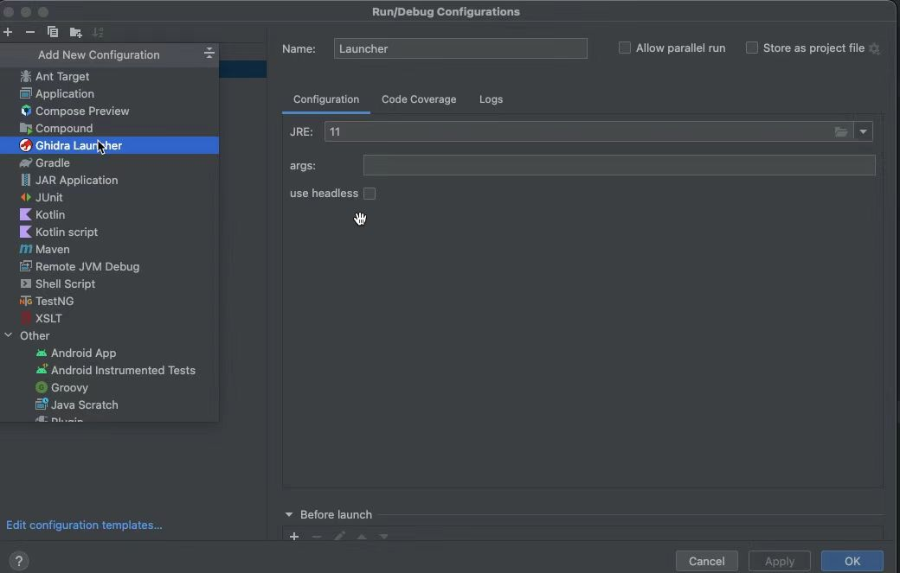
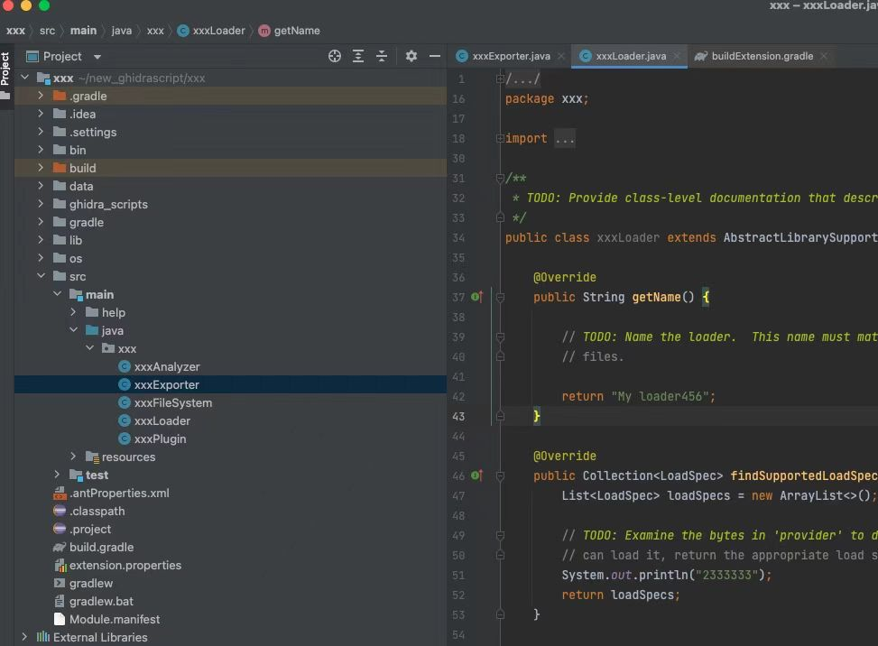

Ghidra 上脚本和扩展的开发都需要用到 Eclipse, 但 Eclipse 除了创建项目和调试的时候方便一点，开发体验却很糟糕。于是我就有了用 IDEA 替代 Eclipse 的想法，Ghidra 脚本支持 java 和 python2 开发， 我这里只讲 java 的配置。
首先，从github链接 中下载IDEA的插件， 这个插件应该只适用于社区版本的IDEA， 如果你用的是商业版， 则需要自行编译这个插件。 另外，IDEA 的版本不能太低，我之前用的2018.3的版本就无法使用这个插件。
先新建一个空白的 java 项目。之后打开IDEA 的设置界面, 在Plugins选项中选择从本地安装插件， 安装完之后，插件列表中会出现Ghidra 的插件。
接着打开Project Structure, 在 Facets中，加入Ghidra选项并配置好Ghidra 的安装路径。
最后再配置一下项目的Configurations, 增加Ghidra Launcher， 选择JRE 为 11。 这个插件也提供了headless 的选项， 如果有需要可以勾选。

配置完之后，就可以正常启动Ghidra 了。 启动之后， 还需要把脚本的路径添加到Ghidra 的script manager中，如果是在eclipse 中进行开发，则不需要这一步，因为 Eclipse 会自动配置好。 具体的操作如下：

需要记住的是，不要把插件的目录放到某个已有路径下面， 否则会提示找不到类。之后就可以正常运行脚本了，
另外如果需要调试的话，直接按IDEA 中的 Debug 按钮就可以很轻松的调试了。
Extention 的开发会稍微麻烦点, 首先需要用 Eclipse 创建一个Ghidra Extention 模版， 然后使用 IDEA 以 gradle 项目的方式打开项目。此时ghidra 相关的库已经导入，可以正常编辑了。

接着就是按照开发脚本的操作， 将整个项目配置好，然后就可以正常调试了， 如果项目中有用到ghidra_scripts ，仍然需要将scripts 所在的目录添加到script manager中。
当我们把extention 开发完毕之后，就需要打包了。由于整个项目是一个gradle 项目，只要运行 ./gradlew buildExtension 就可以打包了。
目前Ghidra 的开发环境还不算特别友好， 希望 Ghidra 官方后续能出个适配IDEA 的开发插件， 另外python3 也能够支持上。如果大家有更好的方法，也可以告诉我:)
若有收获，就点个赞吧